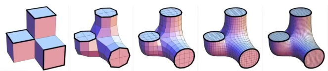

产品亮点

曲面全覆盖
创新的柔性磁体+霍尔阵列结构，适配任意复杂曲面，实现大面积、无缝贴合的压触感知。

自研建模软件
自研建模工具，支持曲面分割、补强板定位、FPC/PCB设计，快速完成结构与传感器布局设计。

支持定制化
可根据客户需求，定制尺寸、阵列密度、接口协议等，满足多样化应用场景。
技术方案
- 柔性磁体层：采用高性能磁粉与硅胶混合注塑成型，支持厚度充磁/单面多级充磁，磁场分布均匀，灵敏度高。
- 硬质基底层：复杂曲面结构，内壁精确开槽，补强板嵌入，保证霍尔阵列与磁体间距一致。
- 霍尔阵列FPC/PCB：高密度柔性电路板，支持3x3mm及更小封装，阵列间距可定制，CAN/串口等多种数据接口。
- 自研设计软件：自动分割曲面、生成补强板与FPC走线，极大提升设计效率。

▲ 复杂曲面结构与FPC补强板示意
- 高一致性：补强板与壳体槽精准配合，保证每个霍尔元件与磁体的距离一致，提升测量一致性。
- 易于集成：支持与主控板、上位机无缝对接，提供完整软硬件方案。
案例展示

FPC及补强板实物

结构原理图：磁体-壳体-霍尔阵列

曲面细分与补强板自动布局

CAN接口硬件实物
欢迎合作与定制
我们可为机器人、智能设备、医疗器械等行业提供曲面全覆盖压触皮肤的定制化设计与生产服务。
如需咨询、定制或获取更多资料，请联系我们！